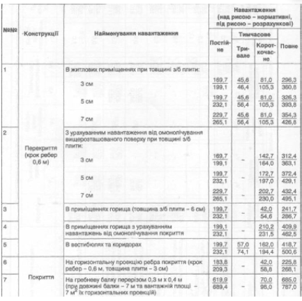

Необхідно описати веб-сторінку для конструкцій, що мають відповідно до варіанту . Таблиця має виглядати наступним чином
| № | Конструкцiї | Найменування навантаження | Навантaження (на ризико – нормативнi, пiд ризико – розрахунковi) | |||
|---|---|---|---|---|---|---|
| Постiйне | Тимчасове | Повне | ||||
| Тривале | Короткочасне | |||||
| 1 | Перекриття (крок ребер 0,6 м) |
В житлових приміщеннях при товщині з/б плити:
|
||||
| 1889,7 | 1889,7 | 1889,7 | 1889,7 | |||
| 1889,7 | 1889,7 | 1889,7 | 1889,7 | |||
| 1889,7 | 1889,7 | 1889,7 | 1889,7 | |||
| 2 |
В приміщеннях горища з урахуванням навантаження від омоноличення покриття
|
213,1 | 45,6 | 81,8 | 295,1 | |
| 1889,7 | 1889,7 | 1889,7 | 1889,7 | |||
| 1889,7 | 1889,7 | 1889,7 | 1889,7 | |||
| 3 | В приміщеннях горища (товщина з/б плити = 6 см) | 129,3 | - | 83,2 | 201,4 | |
| 4 | В приміщеннях горища з урахуванням навантаження від омоноличення покриття | 172,7 | - | 83,2 | 244,8 | |
| 5 | В вестибюлях і коридорах | 129,3 | 123,7 | 142,7 | 266,4 | |
| 6 | Покриття | На горизонтальному прольотi ребра покриття (крок ребер – 0,6 м, товщина плити – 3 см) | 213,1 | - | 72,1 | 285,2 |
| 7 | На гребневу балконі перекриття 0,3 м х 0,4 м (з урахуванням балок – 7 кг та бетонної плити – 7 кг горизонтальних прольотів) | 689,4 | - | 72,1 | 777,0 | |